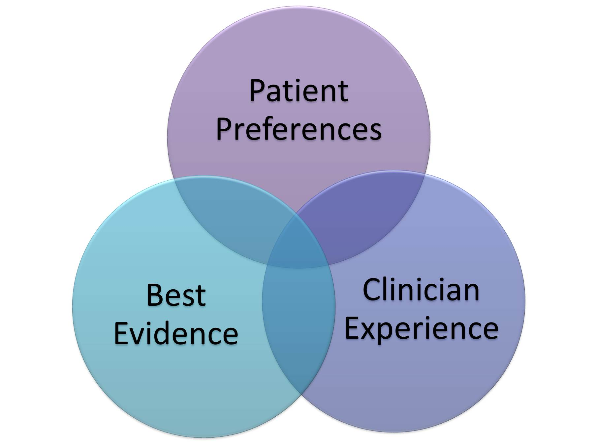

Allopathic medicine relies on scientific research and evidence-based practices to diagnose and treat various medical conditions. Medical treatments are continually evolving based on new discoveries and advancements.

2. Advanced Medical Technologies
Allopathic medicine benefits from cutting-edge technologies such as MRI, CT scans, robotic surgeries, and advanced pharmaceuticals. These technologies aid in accurate diagnosis, precise treatments, and faster recovery.
3. Specialized Medical Professionals
Allopathic medicine offers a wide range of specialized healthcare professionals, including cardiologists, neurologists, surgeons, and more. Patients can access specialized expertise for specific health concerns.
4. Emergency Care and Life-Saving Interventions
Allopathic medicine excels in emergency and critical care situations. Hospitals equipped with allopathic practices can provide life-saving interventions, surgeries, and medications during emergencies.